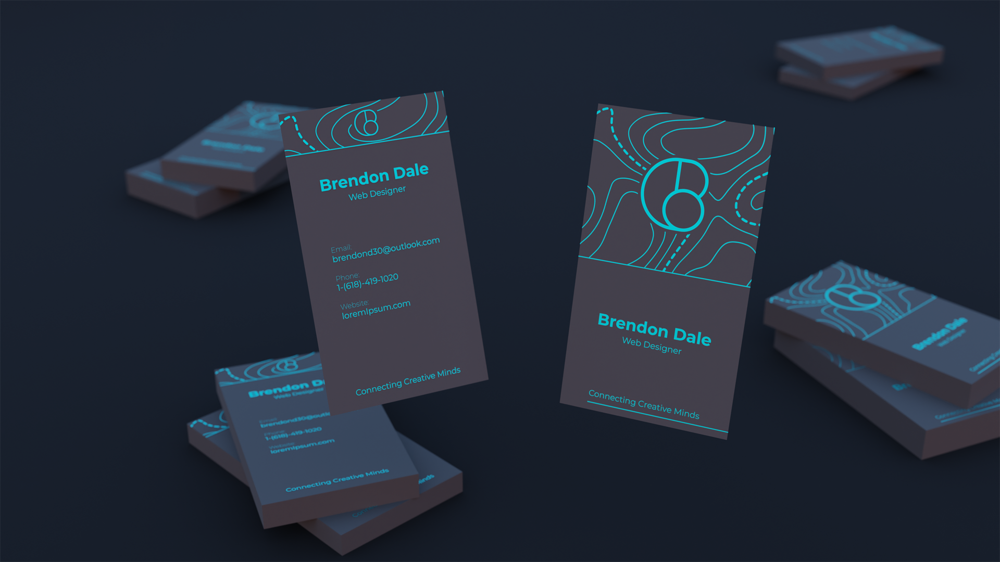
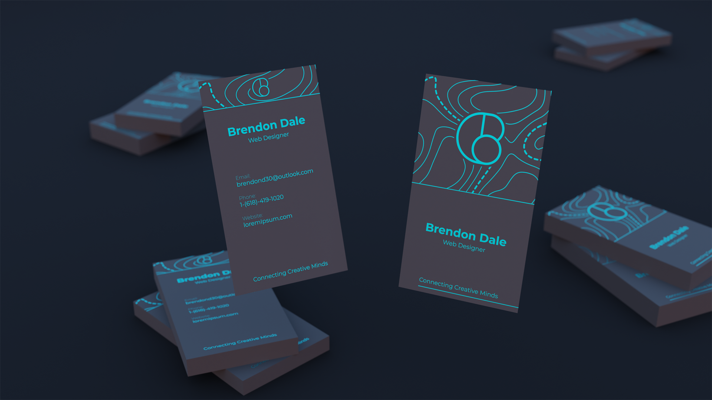
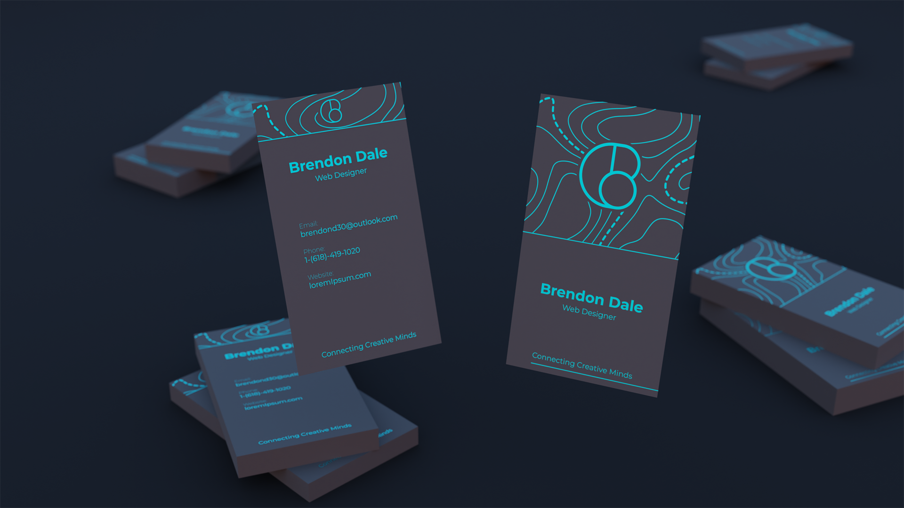

For this assignment, everybody was tasked with creating their own logo, letterhead, and business card.I wanted to keep my logo minimal and clean. It should be easily recognisable, as well as simple to draw so you can remember it. For my leatter head, I didn't want
to distract fron the content of the page so I left out all color, and stuck to thin lines. The pattern is a topographic pattern used to depict hills and general changes in
elevation. Finaly for mu business cards, These would be what is handed out to people and seen the most. I have 3 goals with my business card, I want to attract the
persons eye with an interesting design, allow them to quickly understand who I am and what I do, and lastly they should be able to contact me in multiple ways.

What have I learned in this course?
I've learned that for a begining artistic, working for a design firm cn be a really good opportunity to work with a variety of customers and always have something new. If you prefer something more stable however, working for a company might be a better fit if you're looking for more job security.
Why did I learn?
This class makes me want to pay attention because of the interesting and valuable content. The fact that I get to be creative for my career is amazing and this class is allowing me to
reach more people with a stronger message of who I am.
In what ways is the knowlage I've learned valuable?
This information will allow me to make a better decision as to how want to get a job, aswell as what to exopect from different types of employers. Do I want to work for a company, firm,
or do my own thing as a freelancer?
What do the pieces and the portfolio overall reflect on my learning?
The pieces in this portfolio show my ability to create strong and consistant designs that stick to a brands style, aswell as how I go above and beyond to provide high quality work.
B
Participation
I feel that I should get a B for participation because I complete assignments on time, however I haven't given enough feedback to everyone during the peer review.
A
Progress
For progress, I say A because I participate in all group activities, turn in assignment on time, and achive my goals for assignments.
A
Performance
I feel like this category should be and A because I turn in my best work and make thoughtful decisions when designing. When designing, I make sure to use best practices and also follow the rules of the given assignment.
 



 
